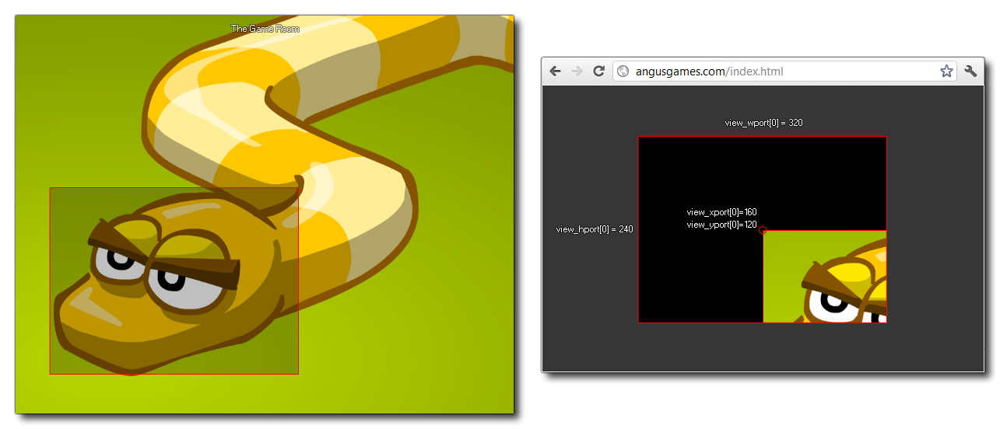
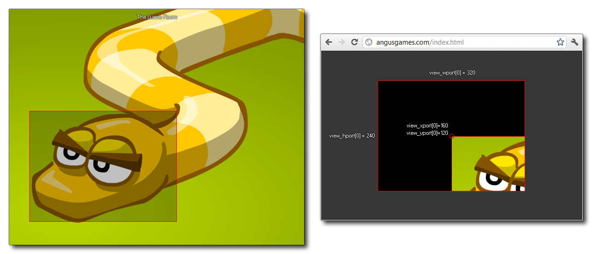

Si vous ne disposez que d' un seul port de visualisation, la valeur x ou y du port peut avoir des effets intéressants mais n'est pas pratique (voir l'image ci-dessous) et il est donc préférable de maintenir la position x et y comme (0,0).

Avec ce tableau intégré, vous pouvez obtenir ou définir la position y du port d'affichage donné. Le port de vue est la zone sur l'écran où la vue est dessinée, et vous pouvez avoir jusqu'à 8 actifs à la fois (le tableau est des valeurs de 0 à 7 inclus pour donner 8 ports). Maintenant, la valeur par défaut pour GameMaker Studio 2 est que la fenêtre de jeu (ou toile de fond) est de la même taille que la pièce. Cependant, lorsque vous activez les ports et les caméras, ce comportement change et la taille totale du cadre est utilisé. Donc, si vous avez deux ports de vue différents à deux positions différentes, la zone totale qu'ils couvrent définit la taille de la fenêtre de jeu. L'image suivante illustre ceci:
Si vous ne disposez que d' un seul port de visualisation, la valeur x ou y du port peut avoir des effets intéressants mais n'est pas pratique (voir l'image ci-dessous) et il est donc préférable de maintenir la position x et y comme (0,0).

view_yport[0 .. 7];
Real
view_xport[0] = 0;
view_yport[0] = 0;
Le code ci-dessus réinitialise la position du port de visualisation [0] à la position (0,0) (coin supérieur gauche) de l'affichage.